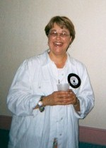

BHS 1967 Class Member
Linda (Rasmussen) Nieman
Click to Email
Click to Email
 1967 Click for Garfield Elementary Photo |
 2002 |
| 1967 Click for Garfield Elementary Photo |
 2002 |
2007 Update: I'm still in Toledo. Not much has changed since our 35th (and my first!) reunion. I treasure the friendships I rekindled five years ago, and really enjoyed being in touch with numerous classmates until my old computer died. I had no idea how to resurrect the electronic address book that died with it, so that's why no one has heard from me. My updated email address is LindaNiemanHome@sbcglobal.net. Please write to me so we can reconnect! I'm looking forward to our gathering in September.
2002 Update: Hmmmm...the story of my life since graduation...in one paragraph? Well, I've lived in two Manhattans (one in New York, one in Kansas); Washington, DC; Houston; Toledo; and a little university town in upstate South Carolina. My travels have taken me as far as India, Nepal, and Thailand. I've never stopped learning, and I've never stopped sharing with others the many wonderful things I've been privileged to experience and study. I've always been passionately involved in the arts, and I've always been actively committed to issues of social and economic justice. I'd be willing to bet that I'm the only member of our class to become both a Democratic Socialist and a practicing Buddhist. I've learned to be comfortable being the only woman, the only while person, the only gentile, or the only whatever in the overlapping circles of wonderful people who have enriched my life. I currently live in Toledo (also the home of Jeep and Tony Packo's) with my Golden Retriever, Lucy, in a house built by a Prohibition-era gangster. I teach humanities courses at a local community college and volunteer once a week at an inner-city public school, teaching six-year-olds how to read and write. I've done arts consulting nationally since 1988 and have recently begun to do environmental design consulting. I never had children of my own (although I've helped to raise a few), and have been happily single for several years. I'm really looking forward to renewing long-lost friendships at our 35th class reunion - my first!